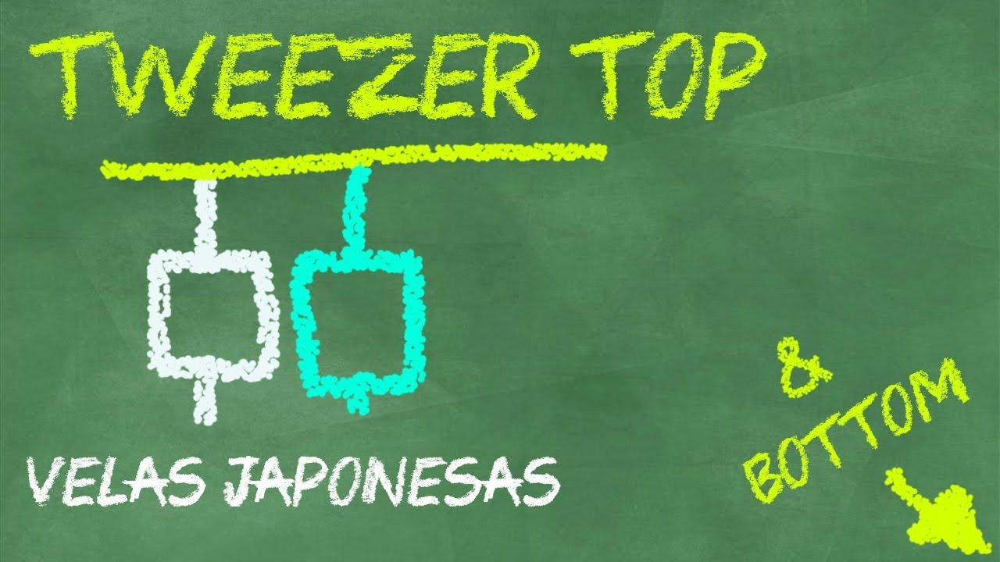

Cómo operar con Tweezer Top y Tweezer Bottom
Este patrón de velas es un tanto peculiar, y a diferencia de los patrones vistos con anterioridad, cómo el Pinbar o los Doji, el patrón tweezer top/bottom, esta compuesto por dos velas.
El Tweezer Top esta compuesto por una vela alcista que se detiene en un nivel de resistencia seguido de una vela bajista que reacciona al mismo nivel. Este par de velas comparten un máximo de la misma distancia.
En el caso del Tweezer Bottom, esta compuesto de una vela bajista que se detiene en un soporte, seguido de una vela alcista que reacciona al mismo soporte. Este par de velas comparten un mínimo a la misma distancia.
Estos patrones no suelen tener una forma definida, pero los más comunes comparten un tamaño similar, y tienen la forma de unas pinzas.
Este patrón de velas es de reversión, y tiende a dar mayor fiabilidad al final de una tendencia, en especial si es a favor de una tendencia general.
El Tweezer Top También es conocido como Techo en Pinzas y el Tweezer Bottom cómo Suelo en Pinzas.
En la siguiente clase se explica más a detalle cómo operar este patrón de vela:
